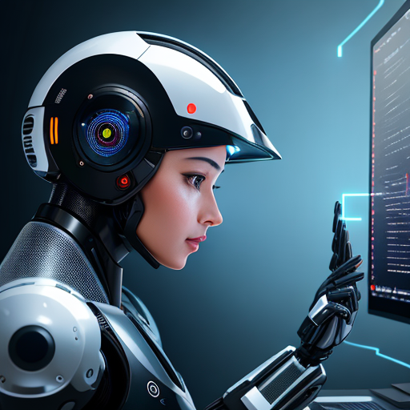

The Future Impact of Artificial Intelligence (AI) on Different Industries
Exploring the Opportunities and Potential of AI Across Various Sectors
Artificial Intelligence (AI) has emerged as a game-changer, poised to transform various industries across the globe. With its ability to analyze vast amounts of data, learn from patterns, and make informed decisions, AI is paving the way for revolutionary advancements. In this informative guide, we will explore the potential impact of AI on different sectors, highlighting the opportunities it brings, while acknowledging the potential job losses and changes that may arise. Let's delve into how AI is reshaping the future of healthcare, finance, manufacturing, transportation, retail, and education.
AI in Healthcare - Revolutionizing Patient Care
Artificial intelligence is revolutionizing the healthcare industry by streamlining processes, improving diagnostics, and enhancing patient care. AI-powered algorithms can analyze medical images, such as X-rays and MRI scans, to aid in accurate and timely diagnoses. Additionally, AI can assist in identifying patterns in patient data, enabling early detection of diseases and personalized treatment plans. While AI will undoubtedly enhance medical practices, it is important to note that it complements rather than replaces human expertise, ensuring optimal patient outcomes.
AI in Finance - Accelerating Efficiency and Risk Management
The finance industry stands to gain significantly from AI integration. AI-powered algorithms can automate routine financial tasks, such as data entry and fraud detection, freeing up time for professionals to focus on strategic decision-making. Furthermore, AI's ability to analyze vast amounts of financial data in real-time enhances risk management capabilities, enabling more accurate predictions and proactive measures. However, it is crucial to strike a balance between AI-driven automation and human oversight to ensure the security and ethical use of financial data.
AI in Manufacturing - Transforming Production Processes
In the manufacturing sector, AI is poised to optimize efficiency and enhance productivity. AI-powered robots and automation systems can carry out repetitive tasks with precision, reducing errors and improving overall output. Additionally, AI-driven predictive maintenance systems can monitor equipment health, enabling proactive repairs and minimizing downtime. While some jobs may be automated, AI creates new roles in programming, maintenance, and supervision, presenting fresh opportunities for upskilling and career advancement.
AI in Transportation - Enabling Smarter Mobility Solutions
Artificial Intelligence has the potential to revolutionize the transportation industry, ushering in a new era of autonomous vehicles, predictive maintenance, and intelligent traffic management systems. Self-driving cars and trucks powered by AI algorithms can enhance road safety, reduce congestion, and optimize fuel consumption. Moreover, AI-based logistics and supply chain management solutions enable real-time tracking, efficient routing, and enhanced customer experiences. While AI-powered automation may reshape the job landscape in the transportation sector, it also creates new roles in AI system development, data analysis, and cybersecurity.
AI in Retail - Personalizing Customer Experiences
The retail industry is embracing AI to deliver personalized customer experiences and drive sales. AI algorithms can analyze customer data to provide targeted product recommendations, tailored advertisements, and personalized offers, enhancing customer satisfaction and loyalty. Chatbots and virtual assistants powered by AI can also handle customer inquiries, providing round-the-clock support. While AI may automate certain aspects of retail jobs, it opens doors to new opportunities in AI-driven customer experience management, data analysis, and marketing strategy.
AI in Education - Revolutionizing Learning Environments
Artificial Intelligence is transforming the education landscape, offering personalized learning experiences and intelligent tutoring systems. AI-powered platforms can adapt educational content to individual student needs, ensuring effective learning outcomes. Furthermore, AI-driven chatbots can provide instant support to students, answering their queries and facilitating continuous learning. While AI enhances the educational process, it cannot replace human educators, as their expertise, guidance, and mentorship remain crucial for holistic development.
Artificial Intelligence is transforming the education landscape, offering personalized learning experiences and intelligent tutoring systems. AI-powered platforms can adapt educational content to individual student needs, ensuring effective learning outcomes. Furthermore, AI-driven chatbots can provide instant support to students, answering their queries and facilitating continuous learning. While AI enhances the educational process, it cannot replace human educators, as their expertise, guidance, and mentorship remain crucial for holistic development.